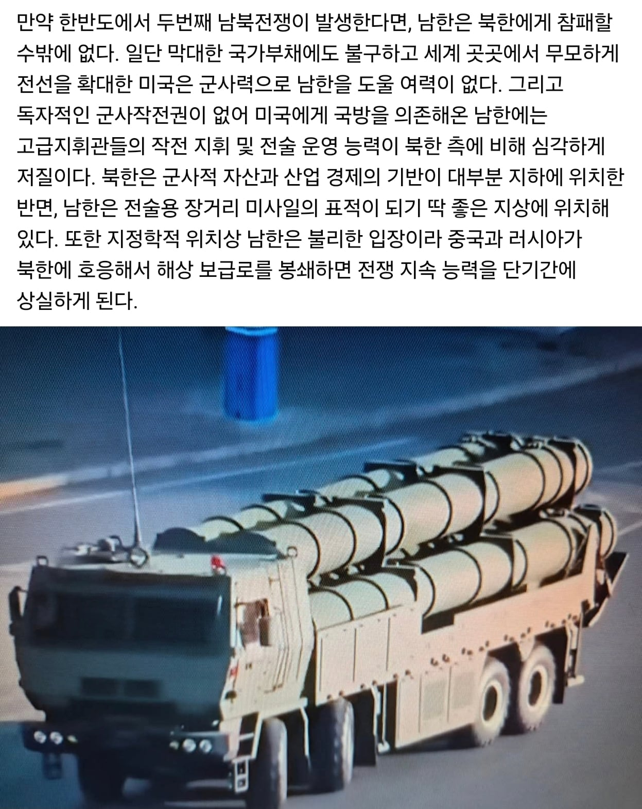

북한이랑 전쟁나면 질수밖에 없는이유
댓글
한국군대 아무리 병신취급을 해도
625당시 현역으로 전쟁겪은지 채 두세대인데
국군이 좆으로보이나 진짜 씹 ㅋㅋ
정말 전면전 상황 벌어지면 우리나라 체면 안 챙길 것 같음
전쟁범죄고 나발이고 민간인 도외시하고 진짜 죽어라하고 화력 쏟아낼껄
근데 전면전이 벌어질 가능성이 있기나 한가
아무리 그래도 화력 차이가 너무 큼
우러전에서 드론전 메타가 뜨긴했는데, 전장 환경이 너무 다르다
우선 우러전에서는 나무가 우거진 산악전이 사실상 전무했음
근데 우린 광케이블 드론이 활약하기 힘든 나무가 우거진 산악전이 전선의 절반임
또한 화력 밀집도의 차이가 너무 큼
우러전에서 화력 집중의 절정이 마리우풀 초토화였는데, 우리나라로 치면 지방 도시 수준의 콘크리트 밀림 걷어내는데 2달 걸렸지
결국 러샤도 다양한 이유로 인해 화력의 집중은 겨우 그 정도였던거임
근데 한반도는 종심이 길고 전선은 짧은 반도 특성상 안 그래도 화력 집중이 쉬운 지형임
거기다가 화력의 총량 역시 우러전에서 보여준 러샤에 그리 뒤지지도 않음
그 정도 밀도의 화력이 우러전 전선에 비하면 수십분의 일에 불과한 면적에 집중되는거지
그런 상황에서 광케이블 드론의 사거리는 자주포 등의 화력에 비해 1/3 수준임
한반도 전장은 거의 모든 전선에 포탄이 비처럼 쏟아질만한 환경인데, 여기서 드론 쓰고 있을 상황이 아니지
무선 드론은 또 전자전, EMP등으로 무력화 가능성이 높음
도저히 드론이 나설 전장 상황이 아님
전장이 넓은 중동하고도 전혀 다른 전장이지
한반도에서 전면전 벌어지면 시가전이 문제지, 드론은 그렇게까지 문제되진 않을 거라고 봄
전면전 상황에서 전선은 북한이 극복할 수 있는 그런 전장이 아님
북한은 시가전에 사활을 걸어야겠지
물론 그럼에도 우리에게도 막대한 피해는 발생할 것임은 자명하지
단순 지상군의 화력만 따지면 세계에서 최상위 수준인 우리나라와 그리 뒤지지 않는 북한의 화력이 이 좁은 전장에서 투사된다는 시점에서 이미 재앙이지
휴전선 기준 위아래로 30km내외는 뒤엎어진 흙 외에는 아무것도 안 남을 것 같음
?? : 그대들은 총력전을 원하는가
애초에 우리나라 전시작계가 북한이 선빵날리면 일단 후퇴해서 정비한다음 반격에서 후퇴없이 즉각반격으로 바뀐지 10년이 넘어가는데
이건 북한군이 기습적인 대규모 공습을 우리군의 평시전력으로 막는게 가능한 수준으로 전력차가 벌어졌다는 얘기임
우린 애초에 북한은 압살하고 그 다음 중국을 어케하냐가 대전략일텐데
북한하나 상대할거면 포병전력 이렇게 많이 유지하는거 존나 비싼거긴함
다 개소리지만 북한 못먹긴 함
핵보유국은 그냥 반무적임 지상군이 적 수뇌부쪽 지역에 들어갈수가 없음
지상군 못들어가면 점령 절대못함
모든이유는 대가리위에서 핵터트릴수있어서임
우리 군 몇천명 죽일각오로 점령군 투입 결정을 할수가 없음
대신 미사일만 평양에 보내드리면 되겠지.
점령 안함. 대신 고위층 몰살 ㅋ
해외로 도망가면 국정원이 암살하는 것도 방법아닌가?
돼지놈 지 형도 해외에서 독살했는데
이란보면 모름? 작정하고 다음지도자 만들어놓고 숨으면 못찾어 찾아도 못죽일 가능성도 높고
그리고 결국 점령군 투입안하면 전쟁 못끝냄 북측이 휴전 혹은 항복하기전까진
전쟁에 몇 천명이 뭐냐 몇 십, 몇 백만이 죽어나갈텐데 못 할것도 없다고 본다
전쟁이 몇개월 몇년 지나면서 몇십만 죽게되는거랑 뒤지쇼 하고 투입하는거랑은 다름
소수인원 분대 소대급을 미션을 위해 스스로 죽을각오로 투입하는경우는 있어도 점령군 투입을 뒤질각오로 시킨경우는 현대사에 없음
핵보유국이랑 전쟁 안하는 가장큰 이유임
응 북한운 못 먹어도 김씨일가는 암살 가능해
그게 무슨 의미가 있니....
전쟁으로 키배 뜨는거 2005년 2007년쯤 참 많이 했었는데 그립네
어떻게보면 참패가 맞긴함
둘다 개박살나니까
가진게 더 많은 우리가 손해지 씨부럴꺼
전쟁에서 승리자가 다 먹는세상은 이미 2차세계대전에서 끝났음
실제로 핵이 들어서고나서부턴 이제 핵이없이 미사일만으로도 너무 큰 피해를 줄 수 있어서 승리자도 ㅈ되는거임
서울에 포탄한방 vs 북한 최전방 초토화 혹은 평양 초토화
해도 우리가 손해임 ㅋㅋㅋ
그것도 국가기반시설이 파괴되었을때 얘기임
전후복구로 피똥쌀게 확정인데 이것도 우리나라 전쟁피해복구에 드는 돈이 1이면 북한개발?하는데 드는 돈이 100쯤 될꺼다